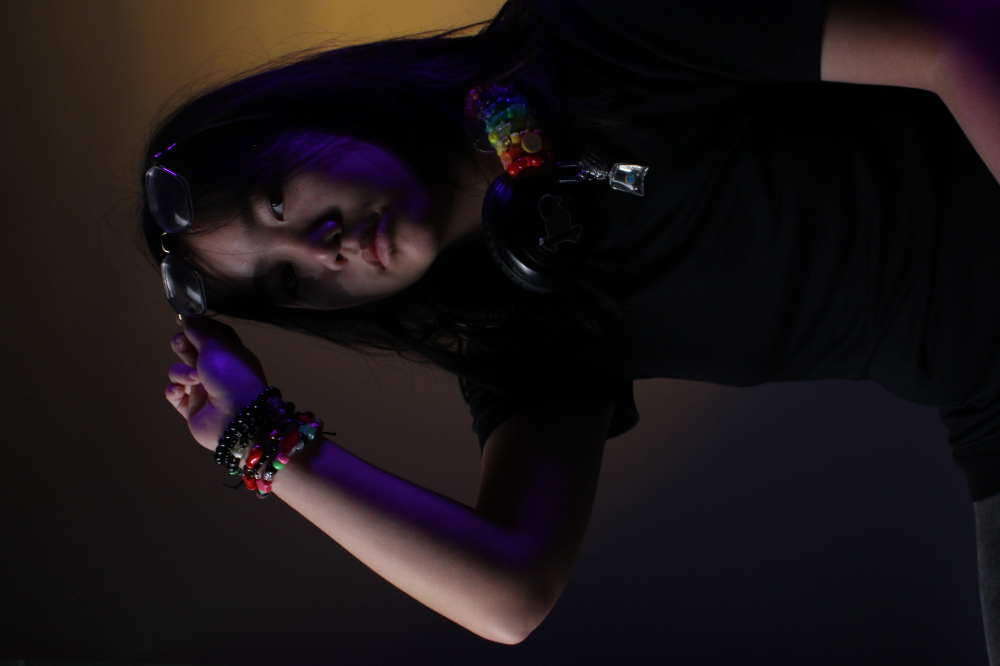
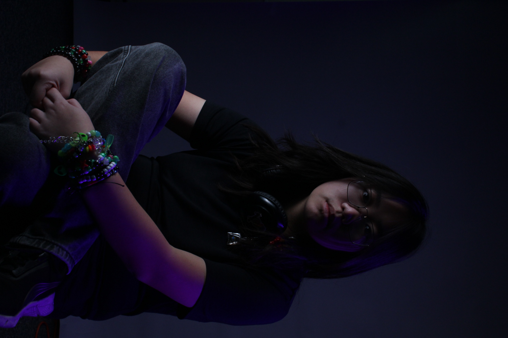

A Personal Collection
The Nocturnal Lens

01
Ethereal Forest

02
Urban Calm

03
Human Shadows

04
The Drift

05
Silent Peaks

06
Neon Pulse

07
Morning Mist

08
Concrete Jungle

11
Golden Hour

12
Architecture

13
Soft Grain

14
Midnight Oil

15
Velvet Sky

16
Reflections

18
Static Motion

19
Faded Memory

20
End Credits